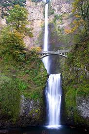
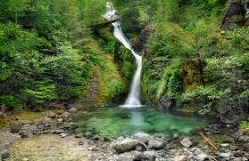
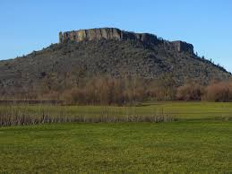
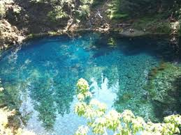
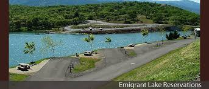
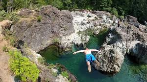

Multnomah Falls is a great place to go for hiking! It has amazing views and the falls are magnificent! Try to get as high as possible on the waterfall for an even better view!
Opal creek is a great place for all sorts of people! It has great hikes with awesome views. Be sure to check out Shady Cove for a great camping experience.
Table Rock is comprised of two large, rocky buttes that are both flat on top, located in arid Southern Oregon. The view from the top of both the lower and upper hikes allows you to see huge swathes of the Rogue Valley.
Located near Eugene, The Blue Pool requires a moderate hike to a naturally bright blue, beautiful swimming hole. The water is naturally frigid, which makes for chilly but invigorating swimming and diving.
A short drive from Medford, Southern Oregon's Emigrant Lake features a wide open swimming area as well as an RV campground for barbeques and comfortable camping.
Three pools is a part of Opal creek and it forms three beautiful pools with cliffs surrounding the whole thing. For the adventurous type tere are even spots to jump off the cliffs into the frigid water.
